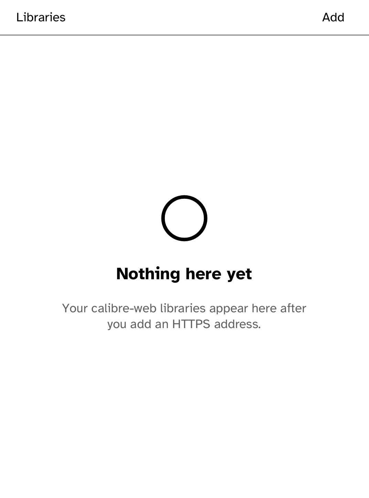
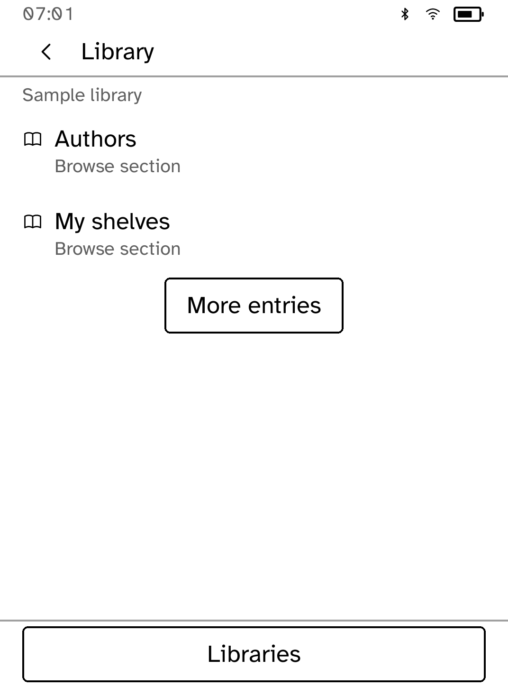
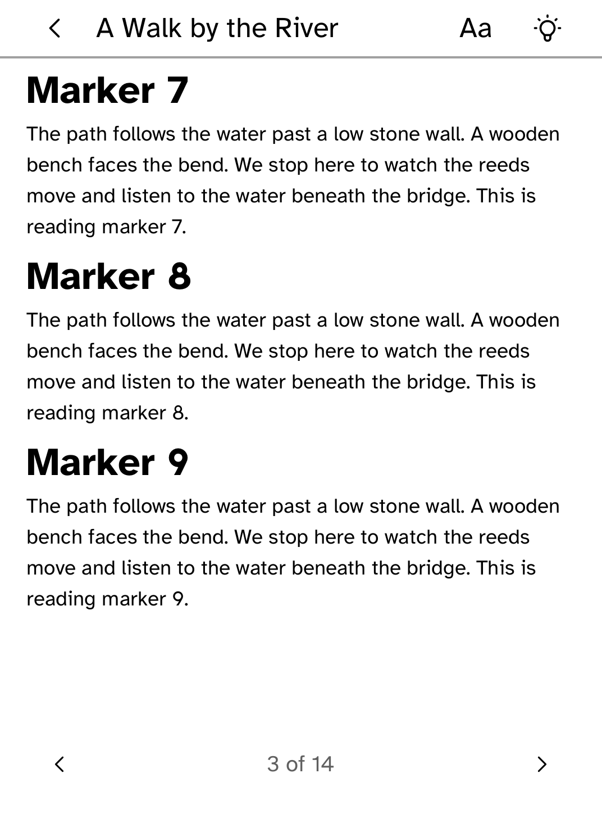

Kobo app
Library
Browse a public or private OPDS library, download EPUBs and continue reading offline. Library is an unofficial OPDS client and is not affiliated with or endorsed by the calibre-web or calibre projects.
- Version
- 0.1.4
- Permissions
- network
- Requires
- Cobalt 0.3.18





New in 0.1.4
Renamed from calibre-web to Library, so the app carries its own name rather than the name of the server software it reads from.
App setup
Before you install
- Add the HTTPS OPDS address of your calibre-web or calibre content-server library.
- Choose Sign in on the reader for a private library, or Use public library. Older named accounts should sign in again to bind the account to this server.
- For a private certificate authority, install its trust root separately.
kobo trust set calibre --device <address>
Do not have Cobalt yet?
Install Cobalt directly from your browser
Plug your Kobo into this computer and the browser writes Cobalt across. About a minute, and no terminal. Applications after that arrive over Wi-Fi from the Cobalt Apps Catalog, with no cable.
Works in Chrome, Edge and Opera. Check your Kobo is supported.
Already have Cobalt?
Link your Kobo to install
On your Kobo, open App Store and tap the globe in the top bar. Choose Link browser, then scan the QR code or enter the pairing code and verification key it shows.
Install on your Kobo
Cobalt verifies the signed catalog and app package before changing the installed copy.